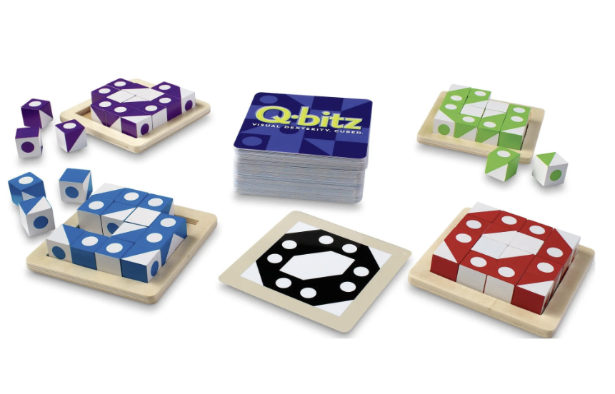
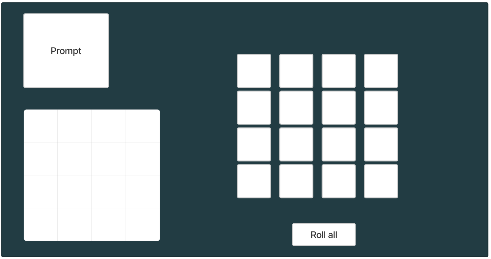
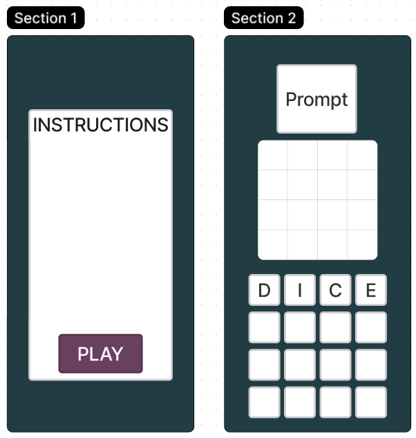

Q-bitz
I. Concept
Inspired by a board game of the same name, use patterned dice to recreate a given design.
II. Genre
Casual dice puzzle game
III. Platform
Mobile-friendly: works best on desktop, but functional on mobile or tablet
IV. Story
Completely abstract, just a puzzle game.
V. Aesthetics
Graphics - Simple but abstract. Patterns on dice include a singular circle, diagonal color split, and solid colors.
Sound - Sound effect when dice are rolled and placed in the puzzle.
VI. Gameplay
Each dice will be able to be dragged with holding the mouse (Desktop) or the same with a finger (mobile). Tapping on a dice will roll it, as well as a "roll" button to roll all dice not in the puzzle yet.
VII. Screenshots
Q-bitz board game - inspiration
Webview
Mobile Views
VII. Other
This will use similar base mechanics as the magnetic poetry assignment with an additional mouse event handler, different graphics, and a handler to check accuracy when the grid has been filled in. My current idea for the logic is each dice will be a Dice object, with a pattern and optional orientation property. There will be a set of pre-created prompts, but if I have time generating them randomly based on possible dice orientations could be cool.
IX. About the developer
I'm Sarah Schneider, a 2nd year NMID with a CS minor. I'm interested in interactive experiences with technology, especially games and VR. I have experience in multiple programing languages (Java, JavaScript, Python, and C#) and multiple Adobe products (Photoshop, Illustrator, and Animate), as well as Unreal Engine.
Documentation